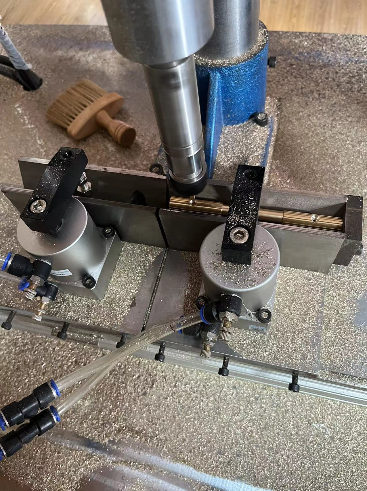
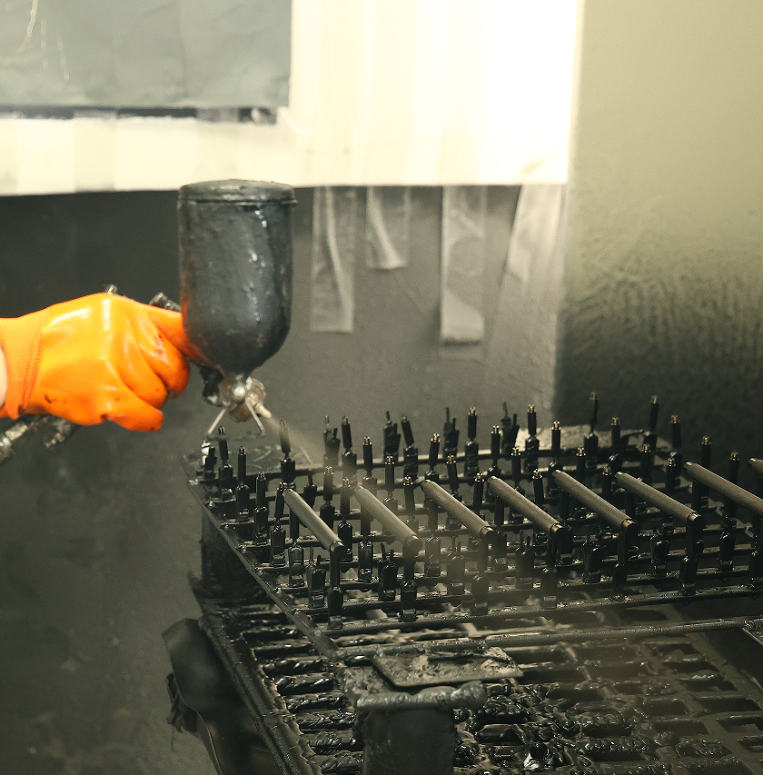

Rodzinny zakład stolarski
W 1989 roku ojciec założył firmę stolarską. To początek rodzinnej firmy i naszego doświadczenia w pracy z materiałem.
W 1989 roku ojciec założył rodzinny zakład stolarski. Z czasem stolarstwo przerodziło się w produkcję mebli, a doświadczenie zdobyte przy ich tworzeniu doprowadziło nas do własnej kolekcji uchwytów z litego mosiądzu. Dziś rozwijamy ją dla producentów, projektantów i dystrybutorów w Europie.

W 1989 roku ojciec założył firmę stolarską. To początek rodzinnej firmy i naszego doświadczenia w pracy z materiałem.
Stolarstwo z czasem przerodziło się w produkcję mebli. Poznaliśmy znaczenie proporcji, funkcji i wykończenia.
Doświadczenie zdobyte przy meblach doprowadziło nas do uchwytów i gałek z litego mosiądzu.
Obróbka, precyzja i wykończenie powierzchni. Zobacz materiały z naszej produkcji.

„Luksus nie musi krzyczeć. Czasem wystarczy, że ma odpowiedni ciężar.”